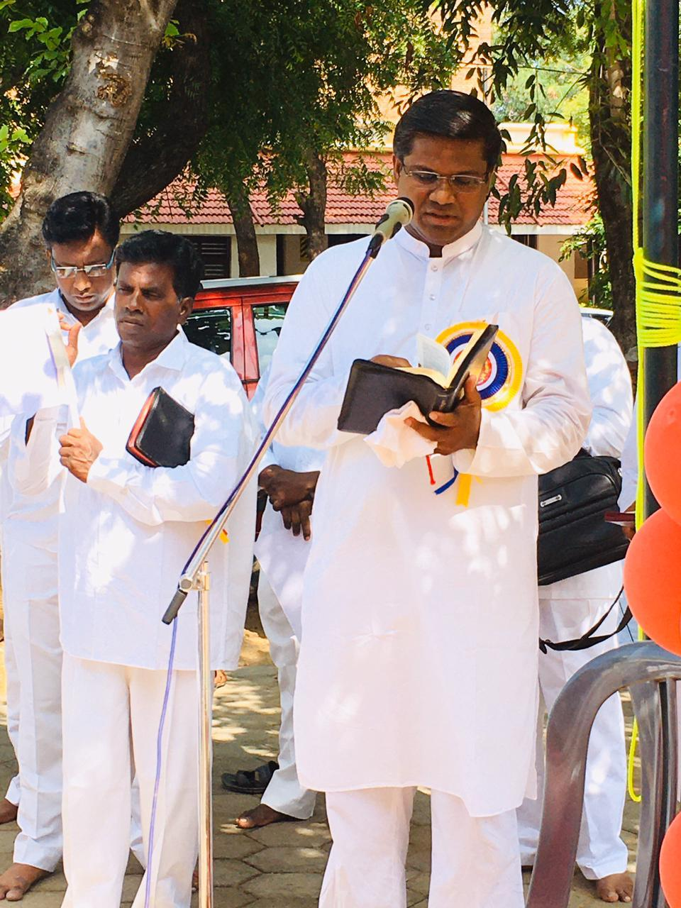
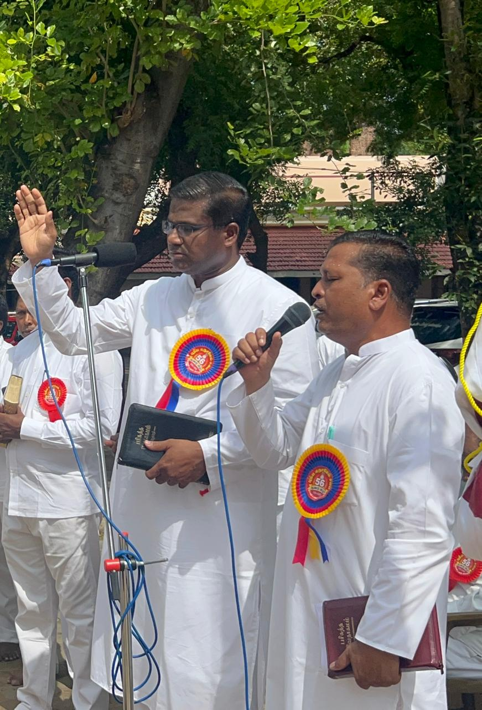

Our History & Mission
🎉 Celebrating 58 Years of Ministry!
"Jesus answered and said unto him, Blessed art thou, Simon Barjona; for flesh and blood hath not revealed it unto thee, but my father which is in heaven. And I say also unto thee, Thou art Peter and upon this rock I will build my church; and the gates of hell shall not prevail against it. And I will give unto thee the keys of kingdom of heaven, and whatsoever thou shalt bind on earth shall be bound in heaven; and whatsoever thou shalt loose on earth shall be loosed in heaven" (Matthew 16:17-19)
New Jerusalem Church (NJC) was founded on 08 August 1968 by Chief Apostle N. Lazar, along with four pastors and a small group of believers. What began as a humble fellowship has grown into a strong and established global ministry, with both national and international missions. We are proudly celebrating 58 years of faithful ministry and spiritual transformation in the world.
The central message of New Jerusalem Church is the deliverance from sin. Through this ministry, over 1,000 living testimonies continue to testify to lives transformed and set free from sin. Today, more than 100 pastors are actively ministering across the world, serving in various regions including England, Andaman Islands, Saudi Arabia, Sri Lanka, Australia, and many other parts of India and abroad. The church is firmly built upon seven foundational teachings, which continue to guide its faith, doctrine, and practices.
Church Origin & Headquarters: New Jerusalem Church was founded in Mumbai and has since grown into a thriving global ministry. The church's headquarters is now established in Nagercoil, from where the spiritual vision and mission continue to reach believers across the world, serving as a beacon of faith and deliverance in Jesus Christ.
Our Beliefs – The Seven Foundational Teachings
- To go and preach the Gospel of repentance to all nations.
- To baptize those who believe in the name of the Father, the Son, and the Holy Spirit.
- To build the Church and teach believers to observe all that Christ has commanded.
- To forgive sins through Christ.
- To guide and shepherd the believers.
- To wait for and receive the Holy Spirit to accomplish all these works.
- To observe the Holy Communion (Eucharist) in remembrance of Jesus Christ until His return.
These teachings have been faithfully followed from the beginning and continue to be practiced today.
Church Founders & Leadership
Chief Apostle N. Lazar
Founder
Background: Chief Apostle N. Lazar founded New Jerusalem Church on 08 August 1968, along with four pastors and a small group of believers. His vision and faith transformed a humble fellowship into a strong and established global ministry.
Legacy: His faithful leadership and spiritual foundation continue to guide the church's mission worldwide.
Read His Testimony
Apostle S. Sundaraj
Co-founder & Early Leadership
Background: Apostle S. Sundaraj worked alongside Chief Apostle N. Lazar to establish and expand New Jerusalem Church's ministry. His dedication helped lay a strong spiritual foundation and contributed to the church's growth across nations.
Contribution: Instrumental in spreading the Gospel and establishing the church's presence nationally and internationally.
Prophet Apostle S. Yesudhasan
Current Leader & Prophet Apostle
Background: Prophet Apostle S. Yesudhasan continues the vision and mission entrusted to New Jerusalem Church. Under his spiritual guidance, the church remains committed to its foundational teachings and continues to minister to believers worldwide.
Message: Leading the church in faith, proclaiming the Gospel of repentance, and shepherding believers towards spiritual growth and deliverance from sin.
Salem Branch Leadership
About Salem Branch

Pastor S. Joseph
Position: Pastor - Salem Branch
Pastor S. Joseph is faithfully guiding the people with full dedication, giving his best to the God-given ministry. His passionate leadership and spiritual commitment serve as a beacon of hope and faith to the congregation at Salem Branch.

Pastor K. John
Position: Co-Pastor - Salem Branch
Pastor K. John serves faithfully and supports the ministry with unwavering commitment. Working together with Pastor S. Joseph, he shepherds the congregation in unity and dedication, strengthening the spiritual foundation of the Salem Branch.